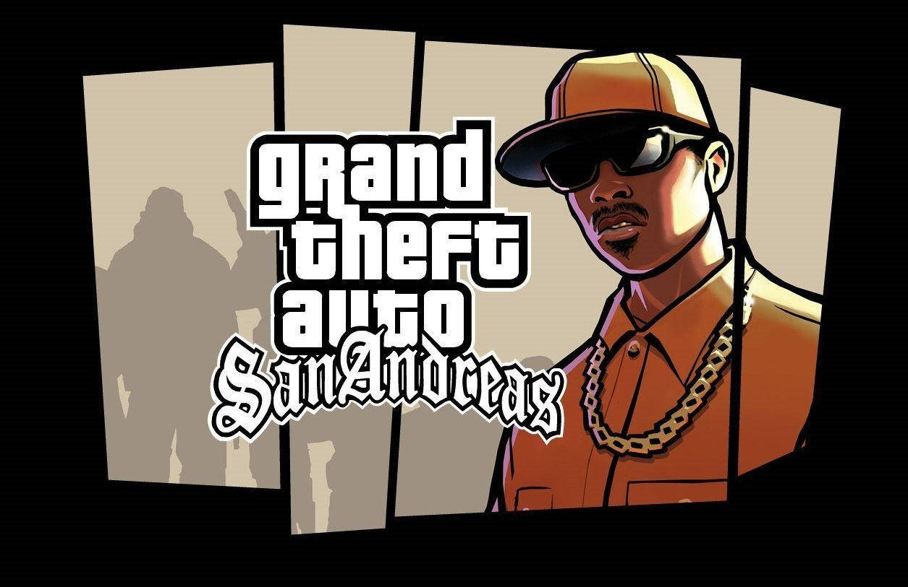

Grand Theft Auto: San Andreas
Grand Theft Auto: San Andreas toma lugar en el estado ficticio de San Andreas, que a su vez está basado en California y Nevada, durante el año 1992. Ésta se compone de tres grandes ciudades ficticias: Los Santos es el equivalente en San Andreas a Los Ángeles; San Fierro corresponde a San Francisco; y Las Venturas es Las Vegas. A diferencia de sus predecesores, donde el mapa estaba limitado a lugares urbanos, GTA: San Andreas incluye zonas desérticas y rurales dentro del estado ficticio, las cuales también se basan en la región del Suroeste estadounidense. De este modo, el juego se compone, además de las tres ciudades principales, de doce pueblos y aldeas localizadas en cinco condados: Red County, Flint County, Whetstone, Tierra Robada y Bone County. La trama y ambientación se inspira en la Costa Oeste estadounidense de los años 1990, y se basa de forma remota en sucesos como la rivalidad entre las pandillas Bloods y Crips, la epidemia de crack ocurrida durante esa época y los disturbios de Los Ángeles de 1992.

historia
Grand Theft Auto: San Andreas narra la historia de Carl «CJ» Johnson, quien decide volver a Los Santos para asistir al funeral de su madre, Beverly, quien ha sido asesinada en un tiroteo. Apenas llega, Carl es interceptado por los oficiales de policía del C.R.A.S.H. Frank Tenpenny, Edward «Eddie» Pulaski y su más reciente incorporación, el oficial Jimmy Hernández, que lo amenazan con incriminarlo en el asesinato de un agente de policía, a menos que éste les ayude en sus operaciones ilegales. Carl vuelve con sus aliados y amigos en su antigua pandilla, los Grove Street Families, trabajando junto con su hermano Sweet, líder de la banda y de quien perdió todo reconocimiento al haberse ido; y con sus compañeros Ryder y Big Smoke, para devolver a Grove como pandilla predominante en la ciudad (puesto que ahora las bandas más fuertes son los Ballas y Los Santos Vagos) y reducir la influencia del crack entre miembros de la banda. Poco antes de una batalla de pandillas entre Grove Street y Ballas, banda archienemiga, CJ recibe una llamada del novio de su hermana Kendl, César Vialpando, un líder de la pandilla Varrios Los Aztecas. Tras pedirle que se encuentren, César muestra a Carl el vehículo implicado en el asesinato de su madre siendo escoltado para sorpresa de CJ por Big Smoke, Ryder, unos Ballas y Tenpenny. CJ se da cuenta de que la batalla es una emboscada y decide ir a por su hermano, quien estaba en pleno enfrentamiento. No obstante, llega demasiado tarde, pues Sweet es herido e internado en el hospital de una prisión. Carl es arrestado, sin embargo, el C.R.A.S.H. logra custodiarlo y lo liberan en Angel Pine con más órdenes de asesinato para su conveniencia. Mientras tanto, Ryder y Big Smoke, ahora aliados con los Ballas e inundando con drogas a la ciudad, toman control absoluto de Los Santos en lo que a pandillas se refiere. Durante su estadía en los condados rurales de San Andreas, Carl hace diversos trabajos con la prima del también exiliado César, Catalina; así como «The Truth», un anciano hippie agricultor de marihuana. Asimismo, durante unas carreras ilegales conoce al ciego Wu Zi «Woozie» Mu y gana el título de propiedad de un garaje ubicado en Doherty, en San Fierro perteneciente a Catalina; mientras ésta decide irse a Liberty City con Claude Speed. Mientras avanza la trama, Carl se traslada San Fierro y trabaja para convertir el garaje en un taller mecánico contratando a los mecánicos Dwaine y Jethro, y al experto en electrónica Zero. También ayuda a Woozie a defenderse de la pandilla vietnamita Da Nang Boys, además de realizar trabajos para Tenpenny. CJ se introduce en el Loco Syndicate, una banda asociada a Smoke y Ryder en su negocio de drogas, para eventualmente asesinar a éste último y a los líderes de la organización, Mike Toreno, T-Bone Méndez y Jizzy B. Posteriormente, Carl es contactado por un hombre misterioso en el desierto que resulta ser Mike Toreno, quien se revela como un agente secreto del gobierno y se compromete a asegurar la liberación de Sweet de la cárcel a cambio de la ayuda de CJ. Más tarde, Carl es invitado por Woozie para asociarle al casino The Four Dragons, en Las Venturas. En este punto comienzan a planear un robo al casino Caligula, controlado por las familias Sindacco, Forelli y Leone. Entretanto, Carl al gerente de Caligula Ken Rosenberg, quien está bajo presión del hampa que controla el lugar. Después de la excesiva presión de las otras dos familias, el jefe mafioso Salvatore Leone llega a Las Venturas, se deshace de las familias Sindacco y Forelli con ayuda de Carl y toma el control absoluto del establecimiento. Posterior a esto, y tras haberlo planificado, Carl y Woozie llevan a cabo su robo, sustrayendo millones de dólares del casino. Un enfurecido Salvatore llama a CJ después del atraco, amenazándolo de muerte. Johnson solo se limita a burlarse de Leone, para luego colgarle. Durante esto, Tenpenny y Pulaski, ahora bajo acusación, intentan asesinar a Carl, pero éste se las arregla para acabar con Eddie después de que asesinara a Hernández, quien había resultado ser un soplón, mientras Frank escapa. CJ también salva al rapero Madd Dogg de intentar suicidarse tras una serie de desafortunados eventos en los cuales Johnson fue el responsable, esto, sin que Dogg lo supiese; convirtiéndose en su nuevo representante y restableciéndose en Los Santos. Poco después de que Carl hace un último trabajo para Toreno, Sweet es finalmente puesto en libertad y CJ accede a ayudarlo una vez más a restaurar Grove Street. Tenpenny va a juicio, pero se retiran los cargos por falta de pruebas, posiblemente gracias a todos los trabajos que Johnson hizo correctamente a orden de éste. La liberación de Frank genera ira y conmoción, lo que provoca disturbios en todo Los Santos. Mientras tanto, César también ha vuelto a la ciudad y pide a CJ que le ayude a restablecer a los Varrios los Aztecas, puesto que los Santos Vagos se han apoderado de la zona. Posteriormente, Sweet localiza a Big Smoke, quien vive en un «palacio de crack» fortificado en Los Santos. Carl, pues, entra acabando con todas las defensas de la fortificación y mata a Smoke en un tiroteo, solo para ser confrontado por Tenpenny, quien roba el dinero de las drogas de Smoke, provoca un incendio en el palacio y escapa en un camión de bomberos. Luego de escapar del edificio, los hermanos Johnson persiguen a Frank por las calles de la ciudad hasta que, finalmente, éste pierde el control y cae por el puente de Ganton, aterrizando en la entrada de Grove Street. Tenpenny logra arrastrarse libre de los restos del accidente, antes de desplomarse y morir.
.jpg)
.jpg)
.jpg)